2 にしざらし
2/43｜2026/08/01
7UEFD
多了哪些牌
 +2+1
+2+1 +1
+1少了哪些牌
 -3-1主BP05-029/BP05-P12：簒奪の従者主卡组 × 3
-3-1主BP05-029/BP05-P12：簒奪の従者主卡组 × 3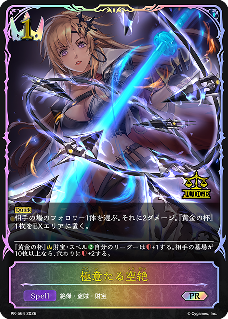
主BP15-026/BP15-P05/PR-564：極意たる空絶主卡组 × 2 主BP05-034/BP05-P14/PR-490：アヴァリティア主卡组 × 3
主BP05-034/BP05-P14/PR-490：アヴァリティア主卡组 × 3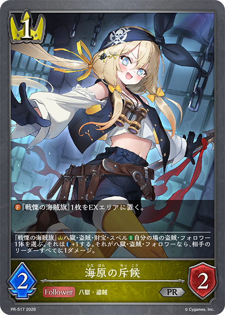
主BP19-030/PR-517：海原の斥候主卡组 × 3 主BP05-018/BP05-SL04：簒奪の絶傑・オクトリス主卡组 × 3
主BP05-018/BP05-SL04：簒奪の絶傑・オクトリス主卡组 × 3 主BP15-028/BP15-P06：空絶の崇拝者主卡组 × 3主BP15-035：アサルトバンデッド主卡组 × 1
主BP15-028/BP15-P06：空絶の崇拝者主卡组 × 3主BP15-035：アサルトバンデッド主卡组 × 1 主BP15-113/BP15-SL29/BP15-SP02：干絶の飢餓・ギルネリーゼ主卡组 × 3
主BP15-113/BP15-SL29/BP15-SP02：干絶の飢餓・ギルネリーゼ主卡组 × 3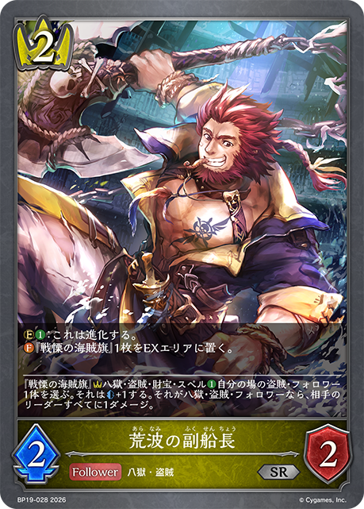
主BP19-028/BP19-P07：荒波の副船長主卡组 × 3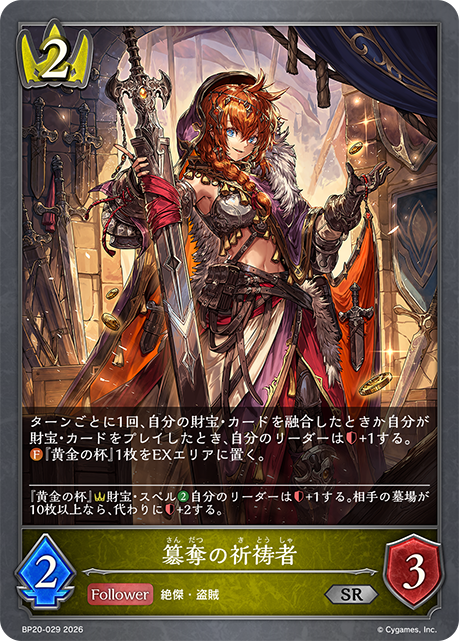
主BP20-029/BP20-P16：簒奪の祈祷者主卡组 × 1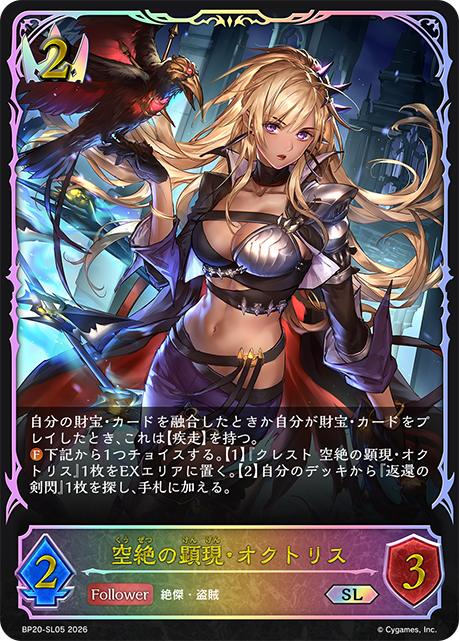
主BP20-019/BP20-SL05：空絶の顕現・オクトリス主卡组 × 3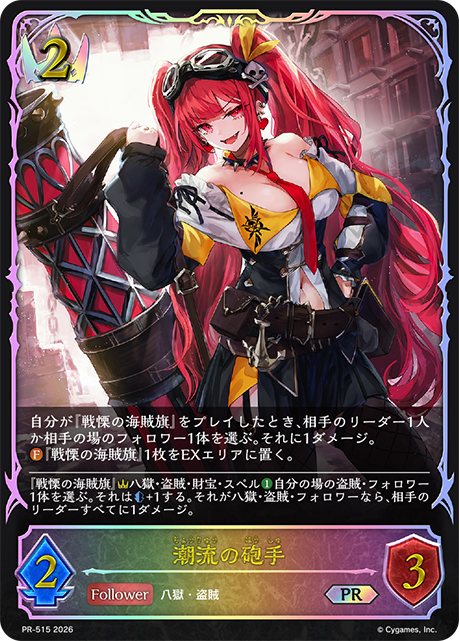
主BP19-026/PR-515：潮流の砲手主卡组 × 3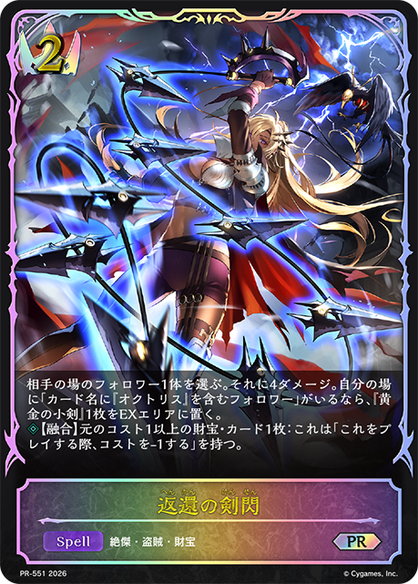
主BP20-026/PR-551：返還の剣閃主卡组 × 3 主BP15-020/BP15-SL06/SCS01-003：空絶の簒奪・オクトリス主卡组 × 3
主BP15-020/BP15-SL06/SCS01-003：空絶の簒奪・オクトリス主卡组 × 3 主BP19-019/BP19-SL05/BP19-SP01：出航の咎人・バルバロス主卡组 × 3
主BP19-019/BP19-SL05/BP19-SP01：出航の咎人・バルバロス主卡组 × 3 进BP05-019/BP05-SL05/BP05-U02：簒奪の絶傑・オクトリス进化 × 2
进BP05-019/BP05-SL05/BP05-U02：簒奪の絶傑・オクトリス进化 × 2 进BP15-029/BP15-P07：空絶の崇拝者进化 × 2
进BP15-029/BP15-P07：空絶の崇拝者进化 × 2 进BP15-114/BP15-SL30/BP15-U07/SCS01-009：干絶の飢餓・ギルネリーゼ进化 × 2
进BP15-114/BP15-SL30/BP15-U07/SCS01-009：干絶の飢餓・ギルネリーゼ进化 × 2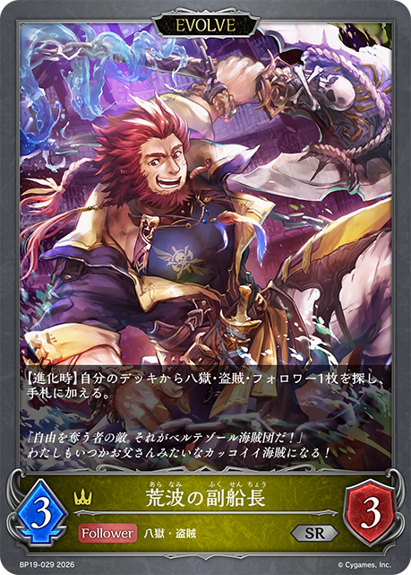
进BP19-029/BP19-P08：荒波の副船長进化 × 2 进BP19-020/BP19-SL06/BP19-U02：出航の咎人・バルバロス进化 × 2+2+1+1-3-1+1-1-1
进BP19-020/BP19-SL06/BP19-U02：出航の咎人・バルバロス进化 × 2+2+1+1-3-1+1-1-1 +2
+2 +2
+2 +1+1+1-3-2-1-1+1-1-1+1-1-1+2+1+1-3-1+1-1-1+1-1-1+1-1-1+1-1-1+2+1+1-3-1+1-1-1+2+1+1-3-1+1-1-1+2+1-1-1-1+1-1-1+1-1-1+1-1-1+3
+1+1+1-3-2-1-1+1-1-1+1-1-1+2+1+1-3-1+1-1-1+1-1-1+1-1-1+1-1-1+2+1+1-3-1+1-1-1+2+1+1-3-1+1-1-1+2+1-1-1-1+1-1-1+1-1-1+1-1-1+3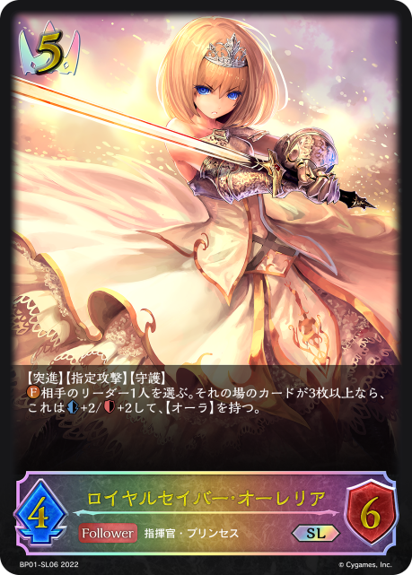
+1+1-3-1-1+1-1-1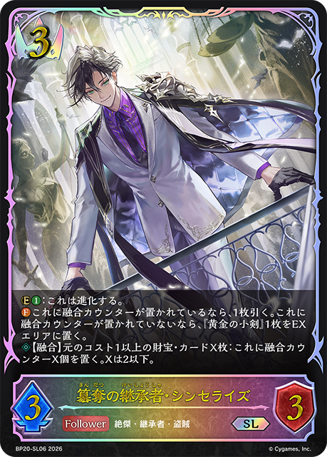
+2 +1+1-1-1-1-1+3+2+2+1-3-2-1-1-1+1
+1+1-1-1-1-1+3+2+2+1-3-2-1-1-1+1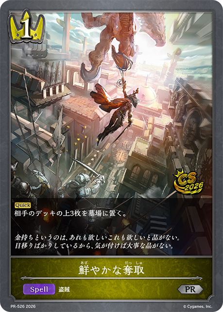
+1+1+1+1-3-1-1+3+2+1-3-2-1+2+2+1-3-3-2+3+2+2+1-3-2-2-1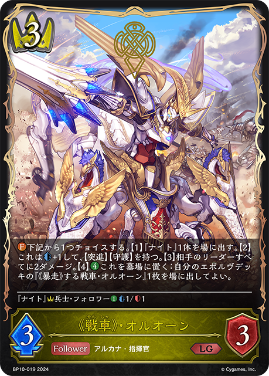
+2+2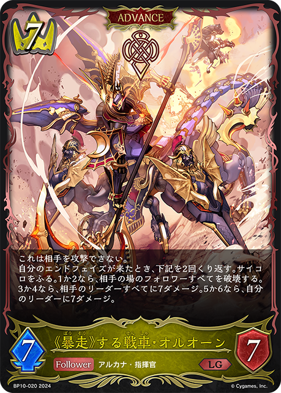
+1+1+1+1-3-2-1-1-1+1-1-1+1-1-1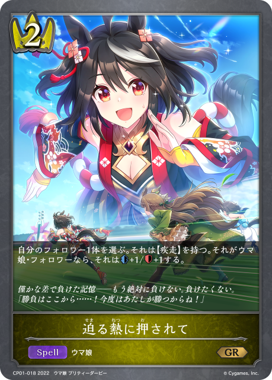
+1-1-1+2+1-1-1-1| 图片 | 平均张数 | 使用率 | 0张比例 | 1张比例 | 2张比例 | 3张比例 |
|---|---|---|---|---|---|---|
|
3.00 | 100.0% | 0.0% | 0.0% | 0.0% | 100.0% |
|
3.00 | 100.0% | 0.0% | 0.0% | 0.0% | 100.0% |
|
3.00 | 100.0% | 0.0% | 0.0% | 0.0% | 100.0% |
|
3.00 | 100.0% | 0.0% | 0.0% | 0.0% | 100.0% |
| 3.00 | 100.0% | 0.0% | 0.0% | 0.0% | 100.0% | |
| 3.00 | 100.0% | 0.0% | 0.0% | 0.0% | 100.0% | |
| 3.00 | 100.0% | 0.0% | 0.0% | 0.0% | 100.0% | |
| 3.00 | 100.0% | 0.0% | 0.0% | 0.0% | 100.0% | |
| 3.00 | 100.0% | 0.0% | 0.0% | 0.0% | 100.0% | |
| 2.97 | 100.0% | 0.0% | 0.0% | 3.1% | 96.9% | |
|
2.97 | 100.0% | 0.0% | 0.0% | 3.1% | 96.9% |
|
1.72 | 87.5% | 12.5% | 12.5% | 65.6% | 9.4% |
|
2.41 | 81.3% | 18.8% | 0.0% | 3.1% | 78.1% |
|
1.59 | 78.1% | 21.9% | 3.1% | 68.8% | 6.3% |
|
0.56 | 25.0% | 75.0% | 0.0% | 18.8% | 6.3% |
| 0.28 | 15.6% | 84.4% | 6.3% | 6.3% | 3.1% | |
|
0.25 | 9.4% | 90.6% | 0.0% | 3.1% | 6.3% |
| 0.06 | 6.3% | 93.8% | 6.3% | 0.0% | 0.0% | |
| 0.06 | 3.1% | 96.9% | 0.0% | 3.1% | 0.0% | |
| 0.03 | 3.1% | 96.9% | 3.1% | 0.0% | 0.0% | |
|
0.03 | 3.1% | 96.9% | 3.1% | 0.0% | 0.0% |
| 0.03 | 3.1% | 96.9% | 3.1% | 0.0% | 0.0% | |
| 0.03 | 3.1% | 96.9% | 3.1% | 0.0% | 0.0% |
| 图片 | 平均张数 | 使用率 | 0张比例 | 1张比例 | 2张比例 | 3张比例 |
|---|---|---|---|---|---|---|
|
2.00 | 100.0% | 0.0% | 0.0% | 100.0% | 0.0% |
|
2.00 | 100.0% | 0.0% | 0.0% | 100.0% | 0.0% |
|
2.00 | 100.0% | 0.0% | 0.0% | 100.0% | 0.0% |
| 1.97 | 100.0% | 0.0% | 3.1% | 96.9% | 0.0% | |
|
1.59 | 81.3% | 18.8% | 3.1% | 78.1% | 0.0% |
|
0.22 | 15.6% | 84.4% | 9.4% | 6.3% | 0.0% |
|
0.19 | 9.4% | 90.6% | 0.0% | 9.4% | 0.0% |
| 0.03 | 3.1% | 96.9% | 3.1% | 0.0% | 0.0% |